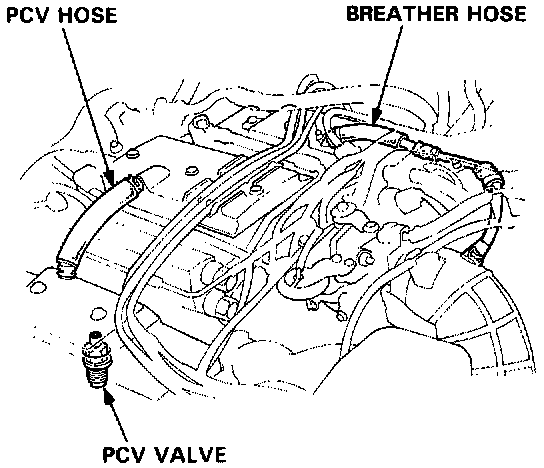
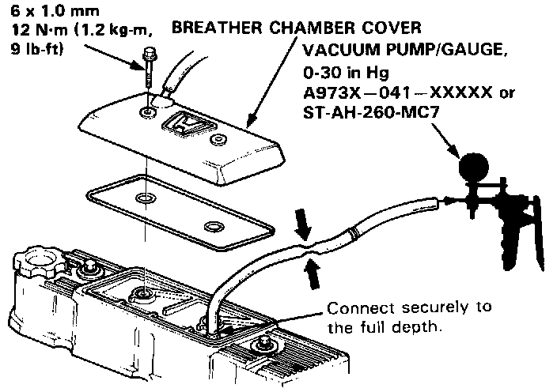

Coupe

Positive Crankcase Ventilation System Inspection
1. Check the crankcase ventilation hoses and connections for leaks and clogging.

2. Remove the breather chamber cover and connect a vacuum pump to the PCV valve.
3. Pinch the hose as illustrated above, apply 400- 500 mmHg (16-20 in.Hg) of vacuum then unpinch the hose and quickly check for a clicking sound on the PCV valve.
- If no clicking sound is heard, replace PCV valve and recheck.